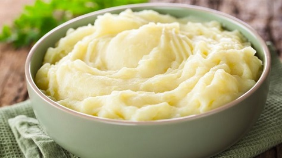

О странице
Страница о кулинарных рецептах
Здесь вы можете ознакомиться с различными рецептами и посмотреть таблицу их КБЖУ
Добро пожаловать и приятного аппетита!
Рецепты
Борщ
Ингридиенты:
- Мясо (говядина или свинина на кости) — 500 г
- Свекла — 2 шт. (средние)
- Капуста — 300 г
- Картофель — 3–4 шт.
- Морковь и Лук — по 1 шт.
- Томатная паста — 2 ст. л.
- Уксус (или лимонный сок) — 1 ст. л. (чтобы борщ остался ярко-красным)
- Чеснок — 2 зубчика, зелень, соль, сахар, лавровый лист
Рецепт:
- Бульон: Залейте мясо водой (около 3 л), доведите до кипения, снимите пену.
Варите на медленном огне 1–1,5 часа. Выньте мясо, нарежьте кусочками и верните в бульон.
- Заправка: Натрите свеклу и морковь на терке, лук мелко нарежьте.
Обжарьте лук с морковью на сковороде 5 минут.
Добавьте свеклу, уксус, томатную пасту, щепотку сахара и пару половников бульона.
Тушите на слабом огне 15–20 минут.
-
Сборка: В кипящий бульон добавьте нарезанный картофель.
Через 10 минут добавьте нашинкованную капусту.
Варите еще 7–10 минут.
-
Финал: Переложите в кастрюлю тушеную свеклу с овощами, добавьте соль, лавровый лист и специи.
Варите все вместе 5 минут, затем выключите огонь.
-
Аромат: Добавьте в кастрюлю измельченный чеснок и зелень.
Обязательно дайте борщу настояться под крышкой 15–20 минут.
Подавайте со сметаной, пампушками и салом!

Пюре
Ингридиенты:
- Картофель — 1 кг (выбирайте желтоватые сорта, они лучше развариваются)
- Сливочное масло — 50–70 г (чем больше масла, тем сливочнее вкус)
- Молоко (или сливки) — 150–200 мл
- Соль — 1 ч. л. (по вкусу)
Рецепт:
- Подготовка: Очистите картофель.
Нарежьте его на одинаковые крупные куски, чтобы он сварился равномерно.
- Варка: Залейте картофель холодной водой (вода должна слегка покрывать его) и поставьте на огонь.
После закипания посолите, убавьте огонь и варите 20–25 минут до полной мягкости
(нож должен легко протыкать картошку).
-
Важный секрет: Пока варится картофель, подогрейте молоко почти до кипения.
Масло достаньте из холодильника, чтобы оно стало мягким.
Если влить холодное молоко, пюре станет серым и клейким.
-
Сушка: Слейте всю воду из кастрюли.
Поставьте кастрюлю с картофелем обратно на выключенную, но еще горячую плиту на 1 минуту,
чтобы испарились остатки влаги.
-
Превращение в пюре: Тщательно разомните картофель обычной толкушкой.
Добавьте размягченное сливочное масло и перемешайте.
-
Финал: Постепенно вливайте теплое молоко, продолжая интенсивно взбивать пюре толкушкой
или ложкой до пышности.

Котлеты
Ингридиенты:
- Фарш (лучше всего домашний: 50% говядины + 50% свинины) — 600–700 г
- Белый хлеб (батон, желательно черствый) — 2–3 ломтика (без корок)
- Молоко или вода (для замачивания хлеба) — 100 мл
- Репчатый лук — 1–2 шт. (крупные)
- Сливочное масло (размягченное или замороженное на терке) — 30 г (секрет сочности!)
- Соль — 1 ч. л. (по вкусу)
- Черный перец — по вкусу
- Растительное масло — для жарки
Рецепт:
- Подготовка хлеба: Срежьте корки с хлеба, залейте мякиш молоком на 5–7 минут, затем слегка отожмите.
Хлеб удерживает мясной сок внутри котлеты, делая её мягкой.
- Приготовление лука: Мелко нашинкуйте лук и обжарьте его до мягкости на сковороде
либо пропустите сырым через мясорубку/блендер вместе с хлебом.
Обжаренный лук делает вкус нежнее, а сырой — дает больше сочности.
-
Замес фарша: Смешайте мясной фарш, размоченный хлеб, лук, соль и перец.
Добавьте кусочек сливочного масла.
-
Отбивание фарша (Секрет пышности): Тщательно вымесите фарш руками, а затем отбейте его:
собирайте фарш в руку и с силой кидайте обратно в миску (повторите 10–15 раз).
Фарш станет однородным, плотным, и котлеты не развалятся при жарке.
Уберите фарш в холодильник на 15–20 минут.
-
Формовка: Смочите руки водой, сформируйте небольшие овальные или круглые котлеты.
По желанию можно обвалять их в панировочных сухарях или муке.
-
Жарка: Выложите котлеты на хорошо разогретую сковороду с растительным маслом.
Обжаривайте на среднем огне без крышки примерно по 3–5 минут с каждой стороны до золотистой корочки.
-
Доведение до готовности: Убавьте огонь до минимума, накройте сковороду крышкой и потомите еще 5–7 минут
(можно добавить пару ложек воды или бульона, чтобы они пропарились).